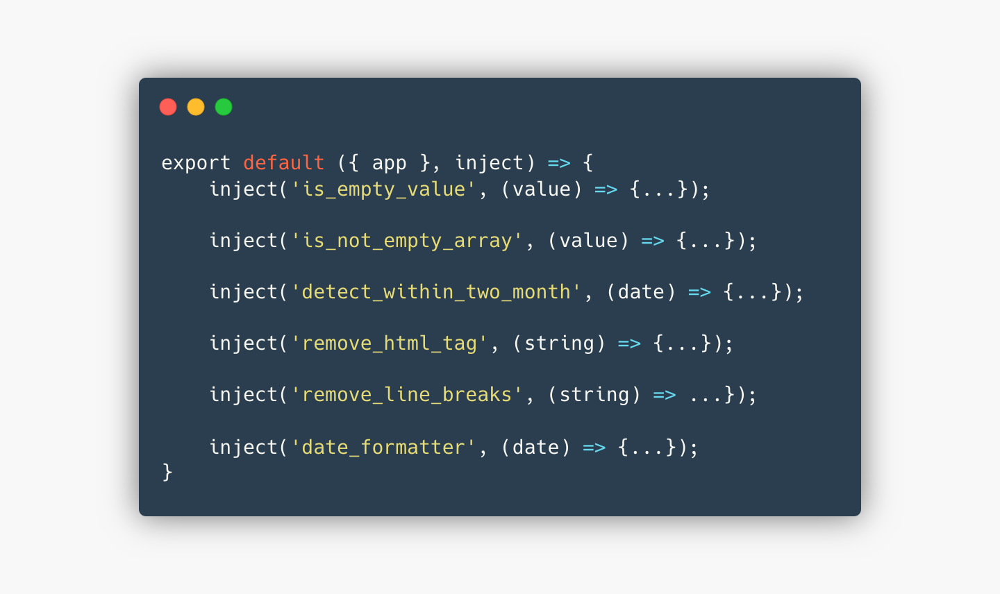

<article>
  <div class="container">
    <div class="row">
      <div class="mockup-with-video">
        
        <div class="ratio">
          <video src="assets/images/cw-book/overall-page.mp4" loop autoplay muted playsinline></video>
        </div>
      </div>
    </div>
    <div class="row justify-content-center">
      <div class="col-md-10">
        <h2 class="text-surface mt-40 mb-20">
          資料處理
        </h2>
        <p>
          第二次使用 Nuxt.js，已經能熟悉使用 emit 及 props 跨元件溝通傳遞。並學習 plugins 整合 VueComponent 及 Nuxt context，使用 context 與 inject 兩個參數自動注入。
        </p>
        <div class="mockup-with-code">
          
        </div>
        <div class="h5 text-secondary mt-10 mb-0">將重複使用 function 集中管理</div>
      </div>
    </div>
  </div>
</article>
